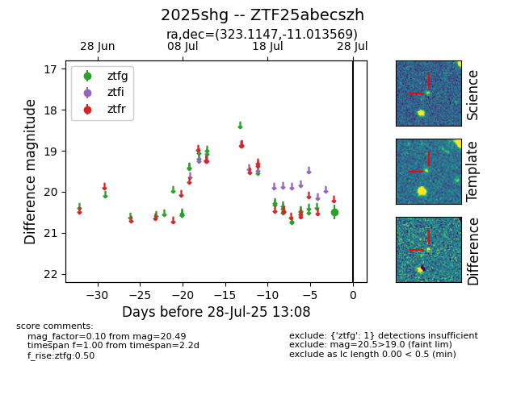

Target 2025shg at 2025-07-28 13:08, see:
FINK: fink-portal.org/2025shg
Lasair: lasair-ztf.lsst.ac.uk/objects/2025shg
ALeRCE: alerce.online/object/2025shg
TNS: wis-tns.org/object/2025shg
YSE: ziggy.ucolick.org/yse/transient_detail/2025shg
alt names
ZTF25abecszh (ztf,fink)
2025shg (tns,yse)
coordinates:
equatorial (ra, dec) = (323.1147,-11.01357)
galactic (l, b) = (41.9732,-40.66417)
photometry
last ztfg=20.49
1 ztfg detections
